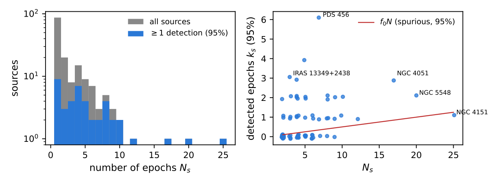
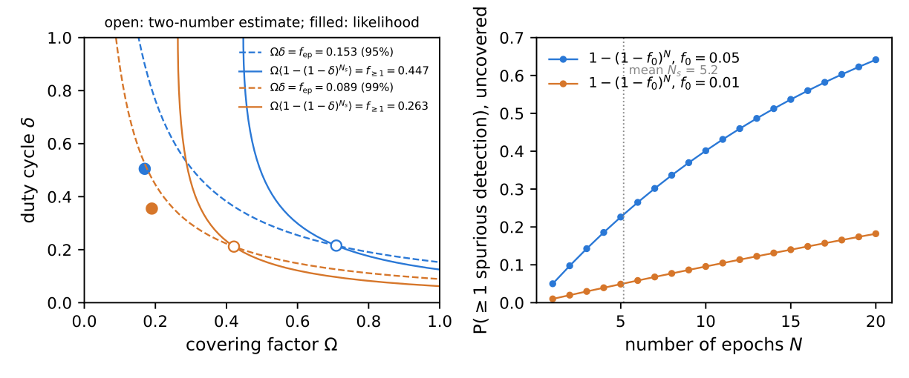
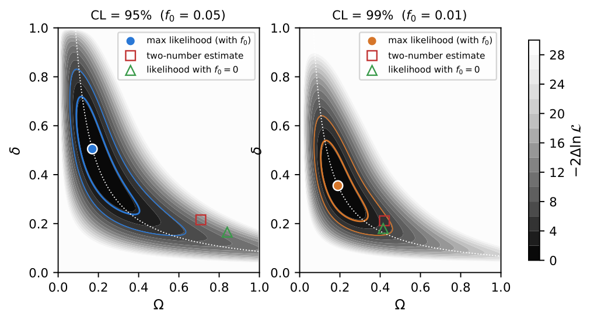
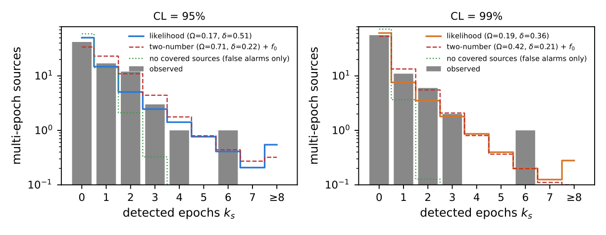

Covering factor and duty cycle Likelihood: an example
How the detections in the repeated observations are turned into the covering factor Ω and the duty cycle δ, step by step, with the numbers of the paper (163 sources, 480 spectra).
Definitions
- Covered source
- A source whose line of sight passes through the region that the wind occupies when the wind is active. This is a geometric, time-independent property: a covered source stays covered in all its epochs, and in an uncovered one the wind, if there is one, is never seen in absorption. The fraction of covered sources is the covering factor Ω.
- Active wind
- The wind is present at a given epoch. In a covered source this happens in each epoch with probability δ (the duty cycle), independently from epoch to epoch.
- Real detection
- A detection in an epoch of a covered source in which the wind is active. On average, an epoch has a real detection with probability Ωδ.
- Spurious detection
- A detection produced by a noise fluctuation in an epoch without an active wind along the line of sight (every epoch of an uncovered source, and the epochs of a covered source in which the wind is not active), with probability \(f_0 = 1-\mathrm{CL}\) per epoch (false alarm).
One simplification of the model: an active wind in a covered source is assumed to be always detected (detection efficiency 1), so in practice δ is the probability that the wind is active and strong enough to be detected.
1. The data
For each source \(s\) only two numbers are used: the number of analysed epochs \(N_s\) and the number \(k_s\) of them with a detected UFO (at least one clean UFO line with Monte Carlo false-alarm probability \(\le 1-\mathrm{CL}\)). The 163 sources comprise 87 with one observation and 76 with \(N_s\ge2\) (393 epochs, on average 5.2 per source). The confidence level CL enters in two places: it decides which epochs count as detections (\(k_s\) changes with CL), and it fixes the false-alarm probability per spectrum, \(f_0=1-\mathrm{CL}\) (0.05 at 95 per cent, 0.01 at 99 per cent), by construction of the Monte Carlo calibration.

2. The two fractions and a first estimate
Two summary numbers of the multi-epoch sources are the fraction of detected epochs and the fraction of sources detected at least once:
At 95 per cent confidence \(f_{\rm ep}=60/393=0.153\) and \(f_{\ge1}=34/76=0.447\); at 99 per cent \(f_{\rm ep}=35/393=0.089\) and \(f_{\ge1}=20/76=0.263\).
If every detection were real, a source would be covered with probability Ω and, if covered, have an active (and detected) wind in each epoch with probability δ. Then
Two equations in two unknowns: their solution is the two-number estimate, \(\Omega=0.71\) and \(\delta=0.22\) at 95 per cent, \(\Omega=0.42\) and \(\delta=0.21\) at 99 per cent. The first fraction fixes the product; the second is larger because a covered source observed \(N\) times is caught at least once with probability \(1-(1-\delta)^N\), which grows with \(N\) and tends to Ω for many epochs.

3. Why the false alarms change the answer
The second equation assumes that every source with \(k_s\ge1\) is covered. But an uncovered source observed \(N\) times is “detected” at least once with probability \(1-(1-f_0)^N\): at 95 per cent this is 5 per cent for one epoch, 23 per cent for 5 epochs and 72 per cent for 25 epochs. Summed over the 76 multi-epoch sources, \(\sum_s[1-(1-f_0)^{N_s}]=16.7\) of the 34 detected sources would be expected even if no source were covered (3.8 of 20 at 99 per cent). The fraction \(f_{\ge1}\) is therefore inflated mostly by the sources with many epochs, and the two-number estimate pushes Ω up and δ down.
4. The likelihood, source by source
The likelihood uses all the pairs \((N_s,k_s)\), not only the two fractions. Each source is either covered (probability Ω) or uncovered (probability \(1-\Omega\)). In a covered source an epoch shows a detection with probability \(q=\delta+(1-\delta)f_0\): either the wind is active, or it is not and a false alarm occurs. In an uncovered source each epoch is “detected” only by a false alarm, with probability \(f_0\):
The ratio \(P_s(\mathrm{cov})=\Omega\,B(k_s|N_s,q)/\mathcal{L}_s\) is the probability that source \(s\) is covered, given its \(N_s\) and \(k_s\). Examples at 95 per cent (\(f_0=0.05\)), at the maximum of the likelihood (\(q=0.53\)), \(\Omega=0.17\) and \(\delta=0.51\); the last column is \(\ln\mathcal{L}_s\) at the two-number estimate (\(\Omega=0.71\), \(\delta=0.22\)).
| Source | Case | \(N_s\) | \(k_s\) | \(B(k|N,q)\) | \(B(k|N,f_0)\) | \(\mathcal{L}_s\) | \(P_s\)(cov) | \(\ln\mathcal{L}_s\) | \(\ln\mathcal{L}_s\) (two-number) |
|---|---|---|---|---|---|---|---|---|---|
| HS 1630+2355 | one epoch, no detection | 1 | 0 | 0.47 | 0.95 | 0.868 | 0.09 | -0.14 | -0.22 |
| 6dF J011424.9-552350 | one epoch, detected | 1 | 1 | 0.53 | 0.05 | 0.132 | 0.68 | -2.03 | -1.63 |
| NGC 3227 | several epochs, none detected | 9 | 0 | 0.00112 | 0.63 | 0.523 | 0.00 | -0.65 | -1.45 |
| NGC 4151 | many epochs, one detected | 25 | 1 | 1.81e-07 | 0.365 | 0.303 | 0.00 | -1.19 | -2.21 |
| PG 0050+124 | few epochs, two detected | 5 | 2 | 0.292 | 0.0214 | 0.0674 | 0.74 | -2.70 | -1.63 |
| IRAS 13349+2438 | active in most epochs | 3 | 3 | 0.149 | 0.000125 | 0.0254 | 1.00 | -3.67 | -4.45 |
| PDS 456 | active in most epochs | 7 | 6 | 0.0728 | 1.04e-07 | 0.0124 | 1.00 | -4.39 | -6.90 |
- One epoch, no detection: the source is most likely uncovered. With one epoch only the product matters: \(\mathcal{L}_s=(1-\Omega\delta)(1-f_0)\).
- One epoch, detected: \(\mathcal{L}_s=\Omega\delta+(1-\Omega\delta)f_0\simeq0.09+0.04\), so about one third of these single detections are expected to be false alarms.
- Several epochs, none detected (NGC 3227, 9 epochs): a covered source with \(\delta=0.51\) would almost surely show its wind at least once, so the source is uncovered. Many such sources push Ω down.
- Many epochs, one detected (NGC 4151, 25 epochs): one detection is exactly what false alarms produce, while a covered source with \(\delta=0.51\) would give about 13 detections: \(P_s(\mathrm{cov})=0\). In the two-number estimate this source counts as covered.
- Wind active in most epochs (IRAS 13349+2438, 3 of 3; PDS 456, 6 of 7): false alarms cannot produce them, so these sources are certainly covered, and they require a large δ. These two sources pull δ up: without them \(\delta\simeq0.17\).
5. Summing over the sources
Difference of \(\ln\mathcal{L}\) between the maximum (\(\Omega=0.17\), \(\delta=0.51\)) and the two-number point (\(\Omega=0.71\), \(\delta=0.22\)), both with \(f_0=0.05\), by group of sources:
| Group | Sources | \(\sum\ln\mathcal{L}_s\) (maximum) | \(\sum\ln\mathcal{L}_s\) (two-number) | Difference |
|---|---|---|---|---|
| single epoch, k=0 | 78 | -11.0 | -16.9 | +5.9 |
| single epoch, k=1 | 9 | -18.3 | -14.7 | -3.5 |
| multi-epoch, k=0 | 42 | -14.8 | -30.1 | +15.3 |
| multi-epoch, k=1 | 17 | -26.7 | -21.8 | -4.9 |
| multi-epoch, k ≥ 2 | 17 | -49.8 | -43.5 | -6.3 |
| total | 163 | -120.6 | -127.0 | +6.5 |
The maximum is preferred by \(\Delta\ln\mathcal{L}=6.5\), so that the two-number point lies outside the 95 per cent contour. The gain comes from the sources without detections, mostly those with several epochs: a large Ω with a small δ predicts too few sources that remain undetected in all their epochs. The sources with detections prefer the two-number point, but less strongly, since at the maximum many of them are explained as false alarms at little cost. The best fit attributes 20.9 of the 34 detected multi-epoch sources to false alarms only (the sum, over the detected sources, of the probability that all their detections are spurious: uncovered, or covered with the wind never active), and 6.2 of 20 at 99 per cent.


Summary
- Fraction of detected epochs: with false alarms, the expected fraction is \(\Omega q+(1-\Omega)f_0=\Omega\delta+(1-\Omega\delta)f_0\), not \(\Omega\delta\). Over all the 480 epochs the observed fraction is 0.144 at 95 per cent (0.081 at 99 per cent), so \(\Omega\delta\approx(0.144-0.05)/0.95\simeq0.10\) (0.086 at the maximum, 0.067 at 99 per cent). This is why the product Ωδ is the well-constrained quantity.
- Fraction of sources detected at least once: without false alarms it would measure Ω. With false alarms, part of it comes from sources with many epochs and one or two detections. The likelihood does not use this fraction: it uses the whole distribution of \(k_s\) at given \(N_s\).
- Confidence level: it selects the detections and sets \(f_0=1-\mathrm{CL}\). At 99 per cent there are fewer detections and fewer expected false alarms, so isolated detections in sources with many epochs become more credible; Ω is similar at the two levels (0.17 and 0.19), while δ drops from 0.51 to 0.36.
Draft results, 2026-11-18. Companion site of The covering factor and duty cycle of ultra-fast outflows in local AGN: an AI-assisted census of the XMM-Newton archive, Lanzuisi et al., in preparation.